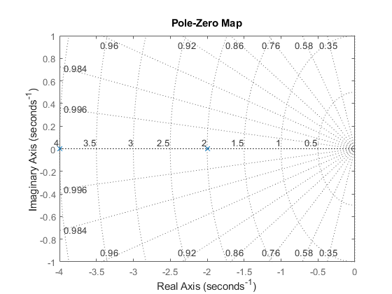

Laboratório de Sistemas Dinâicos
Prática 05 08/04/2024 Autores: Victor Hugo Daia Lorenzato e Whilker Henrique Santos Silva
Contents
Limpar workspcade
clear;
close all;
clc;
Ex01 A
z = zpk([],[j -j],1); step(z); pzmap(z);

Ex01 B
z = zpk([],[-1+j -1-j],[1]); step(z) pzmap(z);

Ex01 C
z = zpk([],[-1 -1],[1]); step(z) pzmap(z);
Ex01 D
z = zpk([],[-2 -4],[1]); step(z); pzmap(z);

Ex02
s = tf('s'); k = [10 100 400]; for n = 1:3 y{n} = 10*k(n)/(s^2+20*s+k(n)); end ltiview(y{1},y{2},y{3});
Ex03 A
s = tf('s');
x = [0.1 1 10];
y1 = 1/(s+1)*x(1)/(s+x(1))
y2 = 1/(s+1)*x(2)/(s+x(2))
y3 = 1/(s+1)*x(3)/(s+x(3))
y1 =
0.1
-----------------
s^2 + 1.1 s + 0.1
Continuous-time transfer function.
y2 =
1
-------------
s^2 + 2 s + 1
Continuous-time transfer function.
y3 =
10
---------------
s^2 + 11 s + 10
Continuous-time transfer function.
Ex03 B
s = tf('s');
x = [0 1 10];
y0 = 1/(s+1);
y1 = 1/(s+1)*x(1)/(s+x(1));
y2 = 1/(s+1)*x(2)/(s+x(2));
y3 = 1/(s+1)*x(3)/(s+x(3));
step(y0,y1,y2,y3);

Ex04 A
s = tf('s');
ltiview(1/(s^2+s+1));
 Ex04 B
s = tf('s'); x = [0.1 1 3 5]; for n = 1:4 y{n} = 1/(s+x(n)); end ltiview(y{1},y{2},y{3},y{4});
Ex04 C
s = tf('s'); x = [0.1 1 3 5]; for n = 1:4 y{n} = series(1/(s^2+s+1),1/(s+x(n))); end ltiview(y{1},y{2},y{3},y{4});

Ex04 D
clear; clc; s = tf('s'); x = [0.1 1 3 5]; for n = 1:4 y1{n} = series(1/(s^2+s+1),1/(s+x(n))); y2{n} = 1/(s+x(n)); end ltiview(y1{1},y1{2},y1{3},y1{4},y2{1},y2{2},y2{3},y2{4},1/(s^2+s+1));

Ex04 E
s = tf('s');
x = [0.1 1 3 5];
y0 = 1/(s^2+s+1);
y1 = 1/(s^2+s+1) * 1/(s+x(1));
y2 = 1/(s^2+s+1) * 1/(s+x(2));
y3 = 1/(s^2+s+1) * 1/(s+x(3));
y4 = 1/(s^2+s+1) * 1/(s+x(4));
step(y0,y1,y2,y3,y4);

Ex05
s = tf('s'); x = [0.1 0.01]; for n = 1:2 y{n} = series(1/(s^2+s+1),exp(-x(n)*s)); end ltiview(y{1},y{2});